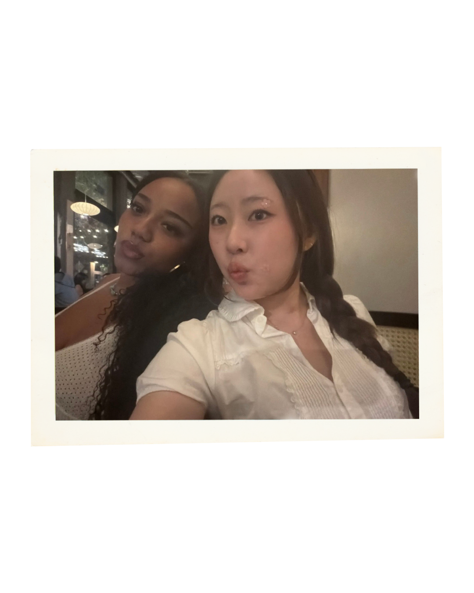
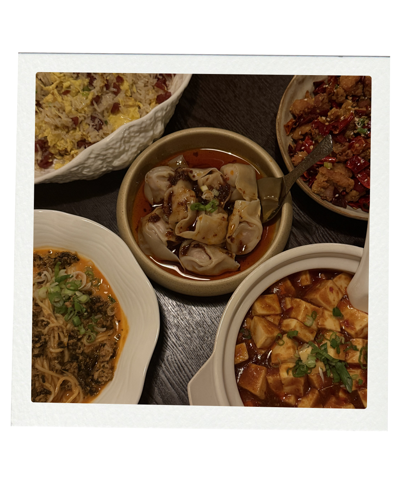
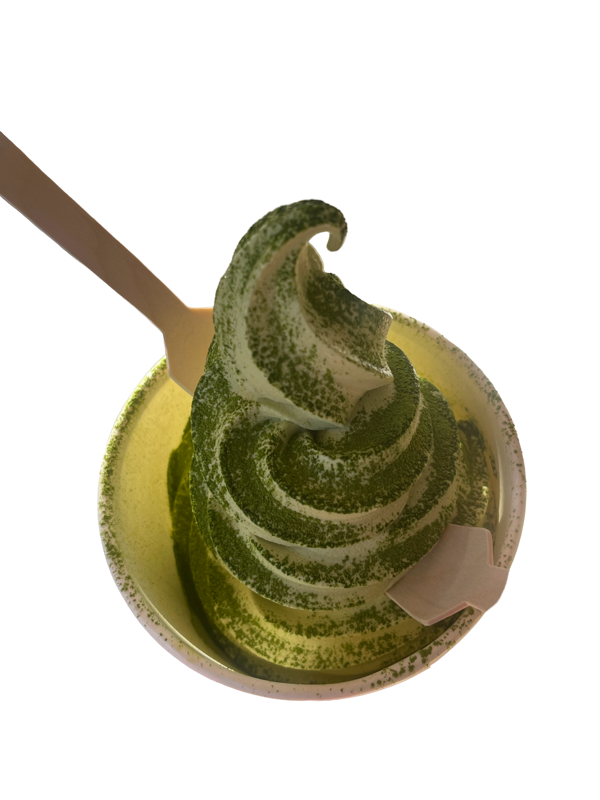
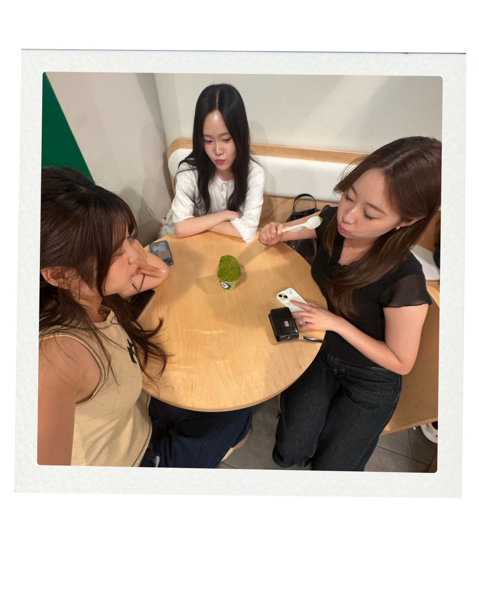

Dear Los Angeles
about
neigborhoods
check out other neighborhoods
archives
Art District





Karson
KarSon doesn't look like any Chinese restaurant I've been to before. The space is minimalistic and modern and genuinely beautiful, the kind of ambiance that makes you want to stay longer than you planned. It opened recently and quickly became one of my favorite spots, conveniently close enough to USC to make it a regular dinner option. My old roommates and I went to catch up over dinner and we all ended up obsessing over the mapo tofu. But honestly the real moment of the night was dessert. The chocolate dumplings arrived and we were immediately fighting over the last one. That's the only review you need.
Tea Master
Finding a matcha ice cream that actually tastes like matcha and not just vaguely green is harder than it should be. Tea Master gets it right. The flavor is real, deep, and exactly what you want. My friends and I ended up here at the tail end of a long day, devoured our ice cream, and just yapped for a while. The perfect excuse to stay a little longer. My go-to for sweets in the Arts District.